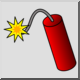
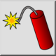
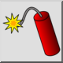
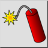

Opbreken
Werkbalk / icoon:
 

Menu: Blok > Opbreken
Sneltoets: X, P
Opdrachten: explode | xp
Dit is een automatische vertaling.
Werkbalk / icoon:
 

Menu: Blok > Opbreken
Sneltoets: X, P
Opdrachten: explode | xp
Verandert blokreferenties, polylijnen, splines, ellipsen, teksten, dimensies en arceringen in basis objecten. Dimensies worden gesplitst in lijnen, driehoeken en tekstobjecten. Tekstobjecten worden gesplitst in polylijnen (of lijnen, bogen en lijnen). Splines worden omgezet in polylijnen met tangentiaal verbonden boogsegmenten. Ellipsen worden omgezet in polylijnen met boogsegmenten. Polylijnen worden opgesplitst in losse segmenten. Arceringen worden gesplitst in lijnen. Vullingen worden omgezet naar de omtrek van de vulling.